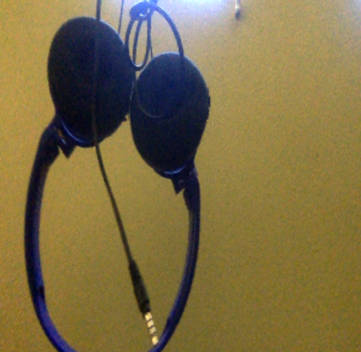
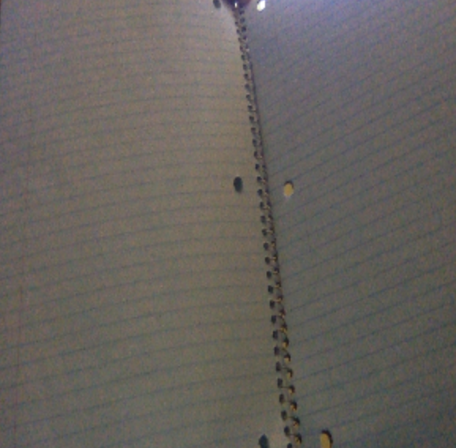
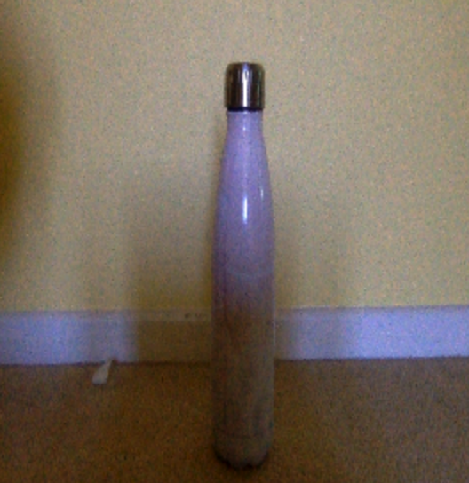

Test Image-

Output on Google Lens - JVC Lightweight Headphones
Output on Mobilenet Model - microphone, mic
Test Image-

Output on Google Lens - Wide Rule Spiral Notebook
Output on Mobilnet Model - binder, ring binder
Test Image-

Output on Google Lens - Stainless Steel Water Bottle
Output on Mobilenet Model - wine bottle
I have tested three images
GOOGLE LENS predicted all of the images more accurately than MOBILNET. My casestudy is now finished, and I have concluded that GOOGLE LENS is more accurate.